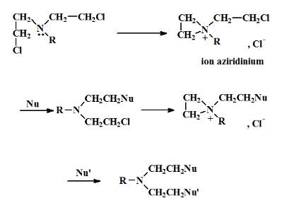

7.9
6 Agents alkylants
6.1 Moutardes Azotées

Mécanisme d’action
L’ion aziridinium obtenu par élimination du Cl- se fixe sur les résidus guanine par des liaisons covalentes stables. Il fait des pontages inter-brins qui entraînent l’apoptose de la cellule.